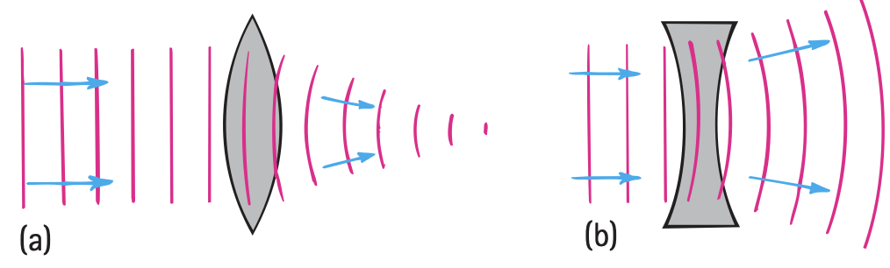
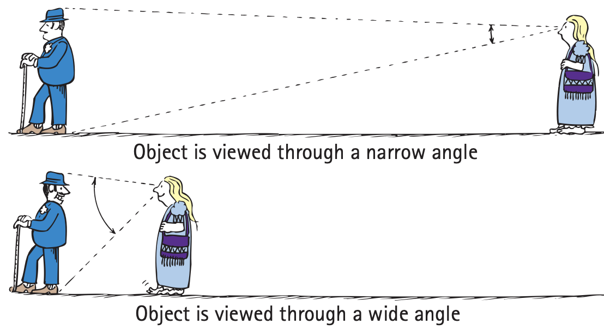

Lenses and Optical Systems
Mathematical idea: Focal geometry describes where rays go, while the thin-lens and magnification relationships connect object and image measurements.
You will trace ray models for converging and diverging lenses, compare projected and apparent images, and connect those models to cameras, magnifiers, eyes, glasses, and projectors.
Learning Target
Students will use ray diagrams and conceptual lens models to explain how lenses form images.
I can statements
- I can distinguish converging lenses from diverging lenses.
- I can draw simple ray diagrams for lenses.
- I can identify focal point, focal length, object distance, image distance, and magnification.
- I can distinguish real and virtual images formed by lenses.
- I can explain how lenses are used in eyes, cameras, magnifiers, glasses, and projectors.
- I can critique incorrect ray diagrams or lens explanations.
Vocabulary
These are words you will see in this section. Do not define them yet.
- lens
- converging lens
- diverging lens
- principal axis
- focal point
- focal length
- object distance
- image distance
- real image
- virtual image
- magnification
Use the preview activity to decide which words you already know, recognize, or do not know yet. Watch for these words in bold when they are first introduced or defined in the reading.
Preview: Skim Before You Read
Directions
Before reading closely, skim the vocabulary list and the section. Look at titles, headings, bold words, pictures, captions, diagrams, tables, and formulas. Do not try to understand everything yet. Your job is to notice what already looks familiar and make predictions about what this section may explain.
Step 1 — Sort the vocabulary. Write each vocabulary word in the column that best matches what you know right now. You may move a word later.
| Know for sure | Recognize | Don’t know yet |
|---|---|---|
Step 2 — Skim the section. Record what catches your attention before you read closely.
| What I noticed | |
|---|---|
| What I predict | |
| What I wonder |
Content: Read, Look, Annotate, Apply
Directions
Read in short chunks. Annotate the prose and the figures together: underline evidence, circle or highlight bold vocabulary, label arrows or measured features, connect a sentence to an image, and write short questions or connections in the margins.
Reading 1: Converging and Diverging Light
A lens is a shaped transparent optical element that redirects light by refraction. A useful model treats a lens as a smooth version of many blocks and prisms. A lens thicker in the middle can make parallel rays come together; this is a converging lens. A lens thinner in the middle can spread parallel rays apart; this is a diverging lens.

Image read: Compare the prism orientations in the two lens models. Mark how the outer rays are redirected differently in the converging and diverging cases.
For a lens, the principal axis is the central reference line through the optical system. For a converging lens, parallel incoming rays meet at a focal point. The focal length is the distance from the lens center to the focal point.

Image read: Locate both focal points and measure the focal length conceptually from the lens center, not from the edge of the lens.
At the center of the lens there is very little direction change because the surfaces there are nearly parallel. The outer regions create stronger redirection. This helps explain why simple ray diagrams often use a central ray as a useful reference and a parallel ray as a focal-point ray.
Stop and Discuss
- Use the first figure to explain why the two lens shapes send parallel rays in opposite kinds of directions.
- On the focal-point figure, distinguish principal axis, focal point, and focal length in one sentence each.
Teacher support: Converging geometry bends outer rays inward; diverging bends them outward. Principal axis is reference line; focal point is convergence/apparent-origin point; focal length is center-to-focus distance.
Example 1: Identify the lens
Parallel rays enter a lens and meet at a point on the far side.
- Is the lens converging or diverging?
- Where is the focal point relative to the lens?
Teacher support: Converging; focal point is on the outgoing side where parallel rays meet.
You Try It 1: A spreading ray bundle
Parallel rays leave a lens spreading apart and appear to have come from a point on the incoming side.
- Identify the lens type.
- Explain what the apparent point means for a diverging-lens ray diagram.
Teacher support: Diverging lens. Backward extensions of outgoing rays point to an apparent focal point on the incoming side.
Reading 2: Ray Diagrams Organize Image Formation
Image formation requires controlling which rays from each object point reach which image point. Without a barrier or lens, rays from different parts of an object overlap widely on a wall and no sharp image forms. A pinhole reduces overlap but also reduces brightness. A lens can redirect a much larger set of rays to organize them into an image.

Image read: Compare panels (a), (b), and (c). Mark where overlapping rays are reduced and where the lens redirects many rays to the image.
Simple ray diagrams follow the real direction of light. For a converging lens, a ray parallel to the principal axis bends toward the far focal point. A ray through the central region is only slightly deviated in the idealized model. Using at least two rays from the same object point lets you locate where the outgoing rays meet or appear to meet.

Image read: Compare how the wavefronts are delayed across each lens. Connect the curved wavefronts to the ray directions after the lens.
Later measurements use object distance for the distance from the object to the lens and image distance for the distance from the lens to the image. Before calculating those distances, the ray diagram should make the physical situation clear: which side holds the object, which way light travels, and whether rays actually meet.
Stop and Discuss
- Why can a lens make a brighter image than a tiny pinhole while still reducing unwanted overlap?
- What two pieces of information should a student establish before deciding where an image forms in a ray diagram?
Teacher support: Lens redirects many rays that a pinhole would block. Before image claims: establish object side/light direction and whether outgoing rays converge or only backward extensions meet.
Example 2: Complete a converging-lens ray model
An object is to the left of a converging lens. One ray leaves the top of the object parallel to the principal axis.
- Describe the ray’s direction after the lens.
- Name a second useful ray you could draw to locate the image.
Teacher support: Parallel incident ray refracts through far focal point. A central ray is a useful second construction in the idealized model.
You Try It 2: Critique a ray that turns before the lens
A student draws a ray from the object curving toward the focal point before it reaches the lens.
- Explain what is wrong with the ray path in the model.
- Revise the path in words: where should the change in direction occur?
Teacher support: Ray should travel straight in uniform air until it reaches lens; direction changes at refraction through the lens.
Reading 3: Real Images and Virtual Images
When an object is inside the focal point of a converging lens, the outgoing rays diverge. The eye can trace them backward and interpret them as coming from a larger image on the object side. This is a virtual image because actual light rays do not pass through the apparent image location.

Image read: Trace the actual rays through the lens, then follow their backward extensions to the enlarged apparent image.
When an object is beyond the focal point of a converging lens, outgoing rays can actually meet on the other side. The image is then a real image. A screen placed at the image location can intercept the rays and display the image.

Image read: Find the screen/wall where actual rays meet. Use that evidence to justify the word real.
A diverging lens used alone forms a virtual, upright, reduced image. The rays spread after the lens and appear to come from a point on the object side.
Image read: Compare this virtual image with the magnifier image. Both are virtual, but one is reduced and one can be enlarged depending on the lens and object position.
Stop and Discuss
- What observational test can distinguish the real image in Figure 28.50 from the virtual image in Figure 28.49?
- Why is “upright or inverted” not enough by itself to define whether an image is real or virtual?
Teacher support: Real image can be caught on screen because rays actually converge. Upright/inverted is image orientation, not the definition of real/virtual.
Example 3: Projector screen
A projector produces a focused image on a wall.
- Is the wall image real or virtual?
- What evidence supports your classification?
Teacher support: Real; actual rays converge at the wall/screen.
You Try It 3: Magnifying glass
You hold a magnifying glass close to a small object and see an upright enlarged image, but placing a card at the apparent image location produces no image.
- Classify the image as real or virtual.
- Explain the classification using actual ray paths.
Teacher support: Virtual; rays entering eye only appear to come from enlarged image location and do not converge there.
Reading 4: Lens Measurements and Optical Systems
Ray diagrams give the physical story; equations can add measurements. The thin-lens diagram labels the object distance $d_o$, image distance $d_i$, and focal length $f$. These distances are tied to where the object, lens, focal point, and image sit along the principal axis.

Image read: Locate $d_o$, $d_i$, and $f$ before using any equation. Check that each distance is measured from the lens or focal geometry shown.
The size comparison between image and object is described by magnification. In this unit, magnification compares image height with object height. A value greater than 1 means the image height is larger than the object height; a value less than 1 means it is smaller.

Image read: Compare the angle of view for the far object and the close object. Connect the wider view to why a magnifying lens can make small detail easier to see.
Optical systems use the same ray-bending ideas for different goals. Cameras use lenses to form real images on a detector. Projectors form real images on screens. Magnifiers create useful virtual images. The eye uses its cornea and lens to focus light on the retina, and corrective glasses change incoming ray directions before the light enters the eye.
A correct explanation should never say that a lens “creates new light.” A lens changes the directions and timing of rays already traveling from a source or illuminated object.
Stop and Discuss
- Why should a ray diagram be interpreted before numbers are substituted into the thin-lens equation?
- Compare camera/projector images with magnifier images using the terms real, virtual, and screen.
Teacher support: Diagram establishes physical sides/convergence before arithmetic. Camera/projector form real screen images; magnifier forms virtual apparent image.
Thin-lens relationship:
$$\frac{1}{f}=\frac{1}{d_o}+\frac{1}{d_i}$$Magnification:
$$M=\frac{h_i}{h_o}$$For this unit, use the ray diagram first to interpret what the distances and heights mean physically.
Example 4: Image distance and size
A converging lens has $f=10\text{ cm}$ and an object is placed at $d_o=30\text{ cm}$. The object height is 4 cm, and the resulting image height is 2 cm.
- Use the thin-lens equation to determine $d_i$.
- Use $M=h_i/h_o$ to determine the magnification and interpret whether the image is larger or smaller.
Teacher support: 1/10=1/30+1/di → 1/di=2/30=1/15, so di=15 cm. M=2/4=0.5, image height is half the object height.
You Try It 4: Critique the “lens makes light” claim
A student says, “The projector lens creates a new picture made of light on the screen.”
- Use ray behavior to explain what the lens actually does.
- Why does the ability to put the image on a screen tell you the image is real?
Teacher support: Lens redirects existing rays so they converge on screen; it does not create new light. Screen interception is evidence rays actually meet.
Vocabulary: Define the Terms
You have now seen these words in the reading, images, and practice. Use this table to consolidate the physics meaning of each term.
| Vocabulary term | Definition |
|---|---|
| lens | A shaped transparent optical element that refracts light to redirect ray bundles. |
| converging lens | A lens that bends parallel rays toward a focal point. |
| diverging lens | A lens that spreads parallel rays so they appear to come from a focal point on the incoming side. |
| principal axis | The central reference line through a lens and its focal geometry. |
| focal point | A point where parallel rays converge after a converging lens or from which they appear to diverge for a diverging lens. |
| focal length | The distance from the lens center to a focal point. |
| object distance | The distance from the object to the lens, $d_o$. |
| image distance | The distance from the lens to the image, $d_i$. |
| real image | An image formed where actual rays meet and that can be projected onto a screen. |
| virtual image | An image formed at an apparent ray-origin location where actual rays do not meet. |
| magnification | The image-to-object height ratio, $M=h_i/h_o$. |
Summary
- Converging lenses bring parallel rays together; diverging lenses spread them apart.
- Focal point, focal length, and principal axis describe lens geometry and support ray diagrams.
- A real image forms where rays actually converge and can be projected; a virtual image occurs where rays only appear to originate.
- The thin-lens equation connects focal length, object distance, and image distance; magnification compares image and object heights.
- Cameras and projectors use real images; magnifiers use virtual images; eyes and corrective glasses use refraction to control focus.
Teacher support: Summary emphasis: Converging lenses bring parallel rays together; diverging lenses spread them apart. Focal point, focal length, and principal axis describe lens geometry and support ray diagrams. A real image forms where rays actually converge and can be projected; a virtual image occurs where rays only appear to originate.
Common Mistakes
| Mistake | Why it is tempting | Check instead |
|---|---|---|
| “A lens creates new light.” | A bright image appears after the lens. | Trace existing rays from the object; the lens only redirects them. |
| “Every converging lens image is real.” | Converging rays often meet. | Check object position: inside the focal point a converging lens produces a virtual magnified image. |
| “Diverging lens means no image.” | The rays do not actually meet. | Trace backward extensions; a diverging lens can form a virtual image. |
| Using the thin-lens equation before identifying the ray situation. | Numbers feel more certain than a sketch. | Locate object, lens, focal point, and expected image behavior first. |
What is the name of the point where parallel rays meet after passing through a converging lens?
A lens forms a sharp image on a screen. Is the image real or virtual? Explain using what the light rays are doing.
What is one thing you learned in this section? Explain it in at least one complete sentence.
What is one thing from this section you still need to understand or practice more? Be specific.